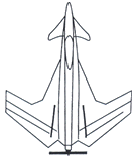
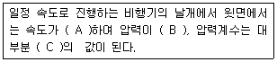
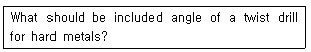
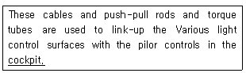
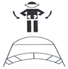
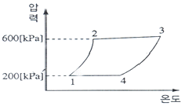
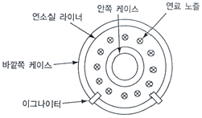

항공기관정비기능사 (2013-01-27 기출문제)
1과목: 비행원리
1. 날개의 앞전 반지름을 크게 하는 것과 같은 효과를 내거나, 날개 앞전에서 흐름의 떨어짐을 지연시키는 장치가 아닌 것은?
- 파울러 플랩(Fowler Flap)
- 크루거 플랩(Krueger Flap)
- 슬롯과 슬랫(Slot and Slat)
- 드루프 앞전(Drooped leading edge)
(정답률: 77%)

2. 회전하는 프로펠러에 작용하는 힘이 아닌 것은?
- 추력
- 원심력
- 표면장력
- 비틀림
(정답률: 82%)
3. 그림과 같은 비행기에서 주날개의 역학적 특성으로 틀린 것은?

- 고속 특성이 좋다.
- 구조적으로 안정적이다.
- 날개 끝 실속이 생기지 않는다.
- 흐름이 날개 뿌리 쪽으로 흐른다.
(정답률: 70%)
4. 헬리콥터가 비행기와 같은 고속도를 낼 수 없는 원인으로 가장 거리가 먼 것은?
- 회전하는 날개 깃의 수가 많기 때문이다.
- 후퇴하는 깃의 날개 끝에 실속이 발생하기 때문이다.
- 전진하는 깃 끝의 마하수가 1 이상이 되면 깃에 충격실속이 생기기 때문이다.
- 후퇴하는 깃뿌리의 역풍범위가 속도에 따라 증가하기 때문이다.
(정답률: 78%)
5. 비행기가 3.6km/h의 속도로 비행하고 있을 때 상승각이 6°라면, 상승률은 몇 m/s인가? (단, sin6°=0.10, cos6°=0.99, tan6°=0.11로 한다)
- 0.3
- 0.9
- 0.1
- 1.1
(정답률: 55%)
6. 유체의 흐름과 관련하여 동압에 대한 설명으로 옳은 것은?
- 속도와 밀도에 반비례한다.
- 속도에 비례하고, 밀도에는 반비례한다.
- 속도의 제곱에 비례하고, 밀도에 비례한다.
- 속도에 비례하고, 밀도의 제곱에 비례한다.
(정답률: 70%)
7. 비행기의 무게 8,000kg, 날개면적 50m2, 최대양력계수 1.5일 때 실속속도는 약 몇 m/s인가? (단, 공기의 밀도는 0.125kgs2/m4이다)
- 29
- 32
- 41
- 54
(정답률: 62%)
8. 방향키 부유각(Rudder Float Angle)에 대한 설명으로 가장 옳은 것은?
- 방향키를 자유로이 하였을 때 공기력에 의해 방향키가 자유로이 변위되는 각
- 방향키를 작동시켰을 때 방향키가 왼쪽으로 변위 되는 각
- 방향키를 작동시켰을 때 방향키가 5초 동안에 변위되는 각
- 방향키를 작동시켰을 때 방향키가 10초 동안에 변위 되는 각
(정답률: 88%)
9. 대기권에서 전리층이 존재하며 전파를 흡수ㆍ반사하는 작용을 하여 통신에 영향을 끼치는 층은?
- 열권
- 성층권
- 대류권
- 중간권
(정답률: 86%)
10. 항공기 날개의 공기흐름에 대한 설명에서 빈칸에 알맞은 말로 옳게 짝지어진 것은?

- A-감소, B-낮아지고, C-음(-)
- A-감소, B-높아지고, C-양(+)
- A-증가, B-높아지고, C-양(+)
- A-증가, B-낮아지고, C-음(-)
(정답률: 69%)
11. 다음 중 비행기의 정적세로안정을 좋게 하기 위한 방법으로 틀린 것은?
- 꼬리날개 효율이 클수록 좋아진다.
- 꼬리날개 면적을 작게 할 때 좋아진다.
- 날개가 무게중심보다 높은 위치에 있을 때 좋아진다.
- 무게중심이 날개의 공기 역학적 중심보다 앞에 위치 할수록 좋아진다.
(정답률: 69%)
12. 비행기의 제동유효마력이 70HP이고 프로펠러의 효율이 0.8일 때 이 비행기의 이용마력은 몇 HP인가?
- 28
- 56
- 70
- 87.5
(정답률: 89%)
13. 헬리콥터의 지면효과에 대한 설명으로 틀린 것은?
- 회전면의 고도가 회전 날개의 지름보다 더 크게 되면 지면 효과가 없어진다.
- 회전 날개 회전면의 고도가 회전 날개의 반지름 정도에 있을 때 생긴다.
- 지면효과가 있는 경우 날개 회전면에서의 유도 속도는 지면효과가 없는 경우에 비해 줄어든다.
- 지면효과가 있는 경우 같은 기관의 출력으로 더 많은 중량을 지탱할 수 없다.
(정답률: 67%)
14. 항공기에서 피치업 (Pitch Up)의 발생원인으로 틀린 것은?
- 후퇴날개의 비틀림
- 후퇴날개의 날개 끝 실속
- 승강키 효율의 감소
- 날개의 풍압중심이 뒤로 이동하기 때문
(정답률: 53%)
15. 항공기 날개에서 상반각(쳐든각)에 대한 설명으로 옳은 것은?
- 윗날개와 아랫날개가 이루는 각
- 날개가 수평을 기준으로 위로 올라간 각
- 기체의 세로축과 날개의 시위선이 이루는 각
- 앞전에서 25%되는 점들을 날개 뿌리에서 날개끝까지 연결한 직선과 기체의 가로축이 이루는 각
(정답률: 74%)
16. 다음의 영문 물은에 가장 올바른 답은?

- 118°
- 90°
- 65°
- 45°
(정답률: 68%)
17. 다음 중 솔벤트세제의 종류가 아닌 것은?
- 지방족나프타
- 메틸에틸케톤
- 수ㆍ유화 세제
- 방향족나프타
(정답률: 74%)
18. 항공기의 구조재를 서로 결합 또는 체결시킬 때 사용되는 것이 아닌 것은?
- 너트
- 스크루
- 리벳
- 튜브피팅
(정답률: 80%)
19. 다음 중 작업 감독자의 책임이 아닌 것은?
- 작업자의 작업상태 점검
- 시설, 장비 및 환경의 투자
- 각종 재해에 대한 예방조치
- 작업절차, 장비와 기기의 취급에 대한 교육 실시
(정답률: 89%)
20. 판재 굴곡 시 굴곡반경이 작을수록 굴곡부에서 일어나는 응력과 비틀림에 대한 설명으로 옳은 것은?
- 응력과 비틀림 모두 커진다.
- 응력과 비틀림 모두 작아진다.
- 응력은 작아지고 비틀림은 커진다.
- 응력은 커지고 비틀림은 작아진다.
(정답률: 50%)
2과목: 항공기정비
21. 보어 스코프(Bore Scope) 작업 중 접안렌즈의 영상을 선명해지도록 조절하는 것은?
- 부착대
- 각도조절기
- 자동관측 조절기
- 디옵터조절링
(정답률: 72%)
22. 다이얼게이지를 이용하여 측정할 수 없는 것은?
- 기어의 백래시
- 원통의 진원상태
- 축의 굽힘 측정
- 작은 안지름이나 홈
(정답률: 64%)
23. 다음 문장에서 밑줄 친 부분이 의미하는 것은?

- 조종면
- 조종실
- 바닥깔개
- 조정간
(정답률: 76%)
24. 비파괴검사의 종류에 속하지 않는 것은?
- 자분탐상검사
- 초음파탐상시험
- 화학분석시험
- 방사선투과검사
(정답률: 93%)
25. 항공기기체를 강풍이나 돌풍으로부터 보호하기 위한 작업을 무슨 작업이라고 하는가?
- 항공기 계류작업
- 항공기 견인작업
- 항공기 유도작업
- 항공기 택싱작업
(정답률: 93%)
26. 두께 0.1cm의 판을 굽힘 반지름 25cm, 90°로 굽히려고 할 때 세트백(Set Back)은 몇 cm인가?
- 19.95
- 20.1
- 24.9
- 25.1
(정답률: 73%)
27. 다음 중 금속 표면에 도금(Plating)을 하는 목적이 아닌 것은?
- 부식방지
- 치수회복
- 표면강도증가
- 결함발견
(정답률: 71%)
28. 다음 중 항공기의 중량, 강도, 기관의 성능 등 감항성에 중대한 영향을 끼치는 작업은?
- 수리
- 예방정비
- 개조
- 경미한 정비
(정답률: 68%)
29. 항공기 유도시 그림과 같은 동작의 의미는?

- 촉괴기
- 기관정지
- 준비완료
- 긴급정지
(정답률: 88%)
30. 산소-아세틸렌 용접에서 사용되는 아세틸렌 호스색은?
- 백색
- 녹색
- 적색
- 흑색
(정답률: 67%)
31. 항공기용 볼트 중 조종 케이블이나 턴버클과 같이 외부 특수한 목적으로 사용되며, 특히 인장하중이 주로 받는 곳에 사용되는 곳은?
- 정밀공차 볼트
- 아이 볼트
- 내부렌치 볼트
- 클레비스 볼트
(정답률: 60%)
32. 항공기 및 관련 장비와 부분품에 적용되는 정비방식이 아닌 것은?
- 상태정비
- 시한성정비
- 폐품정비
- 신뢰성 정비
(정답률: 90%)
33. 충돌, 추락, 전복 및 사고의 위험이 있는 장비 및 시설 물 등에 대하여 주의를 표시하기 위한 색은?
- 빨간색
- 노란색
- 녹색
- 파란색
(정답률: 78%)
34. 단단하게 조여진 볼트나 너트를 풀거나 조이는 대 사용하는 공구는?
- 박스렌치
- 해머
- 플라이어
- 트위스터
(정답률: 91%)
35. 정확한 피치의 나사를 이용하여 실제의 길이를 측정하는 측정용 기기는?
- 피치게이지
- 마이크로미터
- 높이게이지
- 버니어캘리퍼스
(정답률: 56%)
36. 왕복기관 실린더에 있는 냉각핀을 더 많이 설치하여 간격을 좁게 했을 경우에 대한 설명으로 옳은 것은?
- 냉각면적이 감소하여 출력이 향상된다.
- 공기의 흐름을 방해하여 냉각효과가 감소한다.
- 냉각면적이 증가하고 공기의 흐름을 가속시킨다.
- 냉각면적이 감소하여 순항시 과냉각이 일어난다.
(정답률: 60%)
37. 가스터빈기관에서 시동불능 (Not start)의 원인이 아닌 것은?
- 연료 흐름의 막힘
- 프리휠 클러치의 작동 불능
- 시동기나 점화 장치의 불충분한 전력
- 점화 계통 및 연료 조정 장치의 고장
(정답률: 67%)
38. 항공기기관 윤활유의 주요 성질이 아닌 것은?
- 점도
- 인화점
- 유동점
- 옥탄가
(정답률: 76%)
39. 그림과 같은 사이클에서 과정1에서 과정2로 진행했을 때 압력의 변화량은 몇 kPs인가?

- 600kPa 증가
- 200kPa 증가
- 400kPa 증가
- 200kPa 감소
(정답률: 89%)
40. 왕복기관에서 직접 연료분사장치(Direct Fuel Injection System)의 장점이 아닌 것은?
- 비행자세에 의한 영향을 받지 않는다.
- 플로트식 기화기에 비하여 구조가 간단하다.
- 흡입계통 내에는 공기만 존재하므로 역화의 우려가 없다.
- 연료의 기화가 실린더 안에서 이루어지기 때문에 결빙의 위험이 거의없다.
(정답률: 55%)
3과목: 항공기관
41. 가스터빈기관의 점화계통에 대한 설명으로 틀린 것은?
- 점화시기 조절장치가 필요하다.
- 연소는 자체의 열발화로 이루어진다.
- 시동이 걸린 후 점화계통은 자동 차단된다.
- 안전을 위해 독립된 두 개의 점화계통으로 구성된다.
(정답률: 42%)
42. 가스터빈기관의 연료조정장치를 나타내는 것은?
- FOD
- EGT
- FCU
- GPU
(정답률: 76%)
43. 가스터빈기관의 윤활계통에서 윤활유의 역류방지 역할을 하는 것은?
- 니들밸브
- 체크밸브
- 바이패스밸브
- 드레인밸브
(정답률: 79%)
44. 그림과 같은 단면의 가스터빈기관 연소실은?

- 캔형 연소실
- 애뉼러형 연소실
- 성형 연소실
- 캔-애눌러형 연소실
(정답률: 64%)
45. 터보팬기관의 바이패스비(By-pass Ratio)로 옳은 것은?
- 대기압과 바이패스덕트의 압력비
- 기관 흡입구에 대한 기관 배기구 가스 압력비
- 고압 압축기 출구에 대한 바이패스덕트 출구의 압력비
- 1차공기(Primary Airflow)와 2차 공기(Secondary Airflow)의 비
(정답률: 74%)
46. 가스터빈기관에서 배기노즐의 역할로 옳은 것은?
- 고온의 배기가스 속도를 높여준다.
- 고온의 배기가스 압력을 높여준다.
- 고온의 배기가스 온도를 높여준다.
- 고온의 배기가스 질량을 증가시킨다.
(정답률: 70%)
47. 축류형 압축기에서 1단(1Stage)을 옳게 설명한 것은?
- 임펠러와 매니폴드의 합
- 1개의 임펠러와 1개의 디퓨저의 합
- 1열의 회전자와 1개의 디스크의 합
- 1열의 회전자 깃과 1열의 고정자 깃의 합
(정답률: 63%)
48. 왕복기관에서 증기폐색(Vapor Lock)이 발생되는 경우는?
- 연료의 기화성이 좋지 않을 때
- 연료의 압력이 연료의 증기압보다 클 때
- 주변기온이 낮아 연료의 온도가 매우 낮을 때
- 기화성이 좋은 연료가 흐르는 연료파이프가 열을 받았을 때
(정답률: 53%)
49. 점화플러그(Spark plug)에 대한 설명으로 틀린 것은?
- 과열되기 쉬운 기관에는 핫 플러그를 사용한다.
- 점화플러그는 내열성과 절연성이 좋아야 한다.
- 점화 플러그는 전극, 세라믹절연체, 금속쉘로 구성되어 있다.
- 열의 전달특성에 따라 일반적으로 핫(Hot)플러그, 콜드(Cold)플러그, 일반(Normal)플러그로 분류한다.
(정답률: 70%)
50. 흡입밸브가 열리는 시기를 상사점 전 10~25°로 하는 주된 이유는?
- 배기가스가 안으로 들어오는 배출 관성을 이용하여 출력 효과를 높이기 위하여
- 배기가스가 밖으로 나가는 배출 관성을 이용하여 혼합비를 낮추기 위하여
- 배기가스가 밖으로 나가는 배출 관성을 이용하여 흡입효과를 높이기 위하여
- 배기가스가 밖으로 나가는 배출 관성을 이용하여 배기효과를 높이기 위하여
(정답률: 65%)
51. 마그네토의 브레이커 포인트가 열릴 때, 1차 전류에 의해 발생한 전자기장의 붕괴로 인해 1차 코일에 유도 되는 자기유도 전류를 흡수함으로써 아크를 방지하는 구성품은?
- 배전기
- 배전기 핑거
- 1차 콘덴서
- 배전기 블록
(정답률: 74%)
52. 터보팬기관에서 내측 기어박스(Inlet Gear Box)는 어떠한 구동축에 연결되어 있는가?
- 저압축기 축(N1 Shaft)
- 고압축기 축(N2 Shaft)
- 프리 터빈 축(Pre Turbine Shaft)
- LPT 축(Low Pressure Turbine Shaft)
(정답률: 51%)
53. 기압의 변화가 없는 개방계에서 유동일이 10J이고, 내부에너지는 5J일 때 엔탈피는 몇 J인가?
- 5
- 10
- 15
- 20
(정답률: 75%)
54. 가스터빈기관의 추력증가장치에 대한 설명으로 옳은 것은?
- 후기연소기, 물분사장치가 있다
- 후기연소기는 추력의 방향을 바꿔 추력을 증가 시킨다.
- 후기연소기는 배기덕트의 열을 이용하여 분사된 연료를 연소시켜 추력을 낸다.
- 물분사장치는 배기관에 물과 알코올의 혼합물을 분사시켜 사용된다.
(정답률: 64%)
55. 가스터빈기관에서 터빈의 역할에 대한 설명으로 틀린 것은?
- 터빈축과 연결된 압축기를 회전시킨다
- 기계적에너지를 열에너지로 변환시킨다.
- 터빈축에 연결된 기어박스나 팬을 구동시킨다.
- 연소실에서 나온 연소가스를 이용하여 회전력을 얻는다.
(정답률: 61%)
56. 왕복기관의 실린더 배열 방식에 의한 분류로 나열된 것은?
- 대향형, 성형
- 왕복식, 회전식
- 고속형, 저속형
- 공랭식, 액랭식
(정답률: 76%)
57. 고성능 왕복기관에 사용되는 배기밸브 면이나 밸스스템 팁 부분의 마멸에 대한 저항을 증가시키기 위하여 제작 또는 얇게 입혀주는 재질은?
- 마그네슘 합금
- 황동
- 알루미늄 합금
- 스텔라이트
(정답률: 66%)
58. 다음 중 만능 프로펠러 각도기로 측정할 수 있는 각은?
- 깃각
- 캠버
- 시위
- 슬립
(정답률: 84%)
59. 다음 중 과급기(Supercharger)의 형식이 아닌 것은?
- 원심식
- 베인식
- 진동식
- 루트식
(정답률: 60%)
60. 항공기 왕복기관에서 피스톤 링의 역할에 대한 설명으로 틀린 것은?
- 피스톤과 실린더 내벽 사이에 기밀유지를 통하여 블로우바이가스(Blow by Gas)가 생기지 않도록 한다.
- 피스톤이 직접 실린더에 접촉하는 것을 방지하는 일종의 베어링 역할을 한다.
- 피스톤의 열을 실린더에 전달하여 피스톤의 온도를 낮추는 역할을 한다.
- 실린더 내부에 탄소 피막을 형성시켜 실린더 내구성을 향상시킨다.
(정답률: 55%)